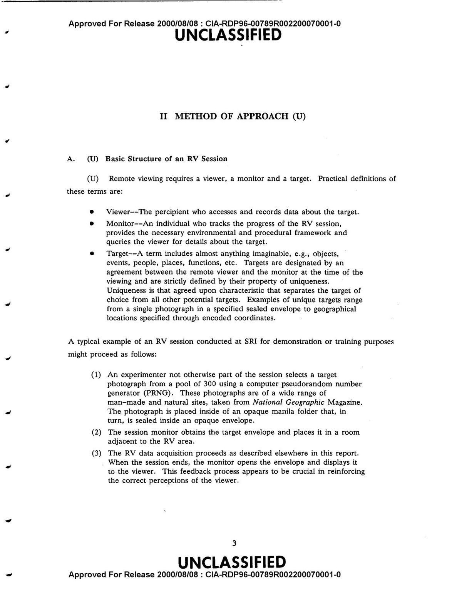

In its October 18, 1974 issue, the journal Nature published a paper that, by the standards most working scientists applied to the subject, should not have been there. The title was clinical: "Information transmission under conditions of sensory shielding." The authors were two physicists at Stanford Research Institute, Harold Puthoff and Russell Targ. The claim was that ordinary people, sealed in a shielded room or separated from a target by distance, had described hidden drawings and remote locations at rates the authors said exceeded chance.
Nature is not a fringe outlet. It was then, and remains now, one of the two or three most selective general science journals in the world. A paper appearing in it carries an implicit endorsement: that the work cleared peer review and that the editors judged it worth the attention of the scientific community. For a field that most physicists and psychologists treated as pseudoscience, getting into Nature was the closest thing to legitimacy available. That is exactly why the paper became, and remains, the most cited single document in the history of remote viewing research.
The story of that paper is more useful than either its defenders or its critics usually allow. It is a case study in how a serious journal handles an extraordinary claim, what counts as adequate experimental control, and how a result can be real on the page and still fail to survive scrutiny. None of those questions has a tidy answer, which is part of why the episode is worth understanding in detail rather than through the slogan version each side prefers.
What SRI Actually Submitted
The work began in 1972. Puthoff, a laser physicist, and Targ, a specialist in laser and plasma research, started running informal tests of claimed psychic ability at SRI. Their early subjects included the artist Ingo Swann and the Israeli performer Uri Geller. The program drew the attention of the CIA, which had been tracking reports that the Soviet Union was investing in parapsychology and did not want to be caught unprepared if there was anything to it. Agency funding followed, channeled through what became known internally as the SCANATE effort, short for scanning by coordinate.
By the time Targ and Puthoff wrote up their results for Nature, they had two distinct lines of evidence to present. The first involved Uri Geller and the reproduction of drawings. The second involved Pat Price and the description of distant physical locations, the line of work that gave the field its enduring name. The two experiments are different enough that they deserve separate treatment, and conflating them has caused decades of confusion.

The Geller Drawings
In the Geller experiments, Geller was placed in a shielded room. A target picture was selected, in some trials by a procedure the authors described as random, and people outside the room attempted to communicate it to him. Geller then drew what he believed the target to be. The paper reported a series of these trials and presented several side-by-side comparisons in which Geller's drawing resembled the target closely. In some cases the match was striking. He also declined to respond on trials where he felt he had no clear impression, which the authors counted as passes rather than failures.
The Geller portion is the weaker half of the paper, and it is where most of the early criticism landed. Geller was a working stage performer whose act was built on apparent telepathy and metal bending. The magician and investigator James Randi, among others, argued that the kinds of effects Geller produced were standard mentalism, achievable by anyone trained in the craft, and that a physics laboratory was precisely the wrong environment to catch a skilled deceiver. A laser physicist knows how to control for instrument error. He is not trained to spot a professional who has spent years learning how to direct attention away from his hands.
Targ and Puthoff were aware of this objection and described shielding and controls intended to rule out ordinary sensory leakage. Critics countered that the descriptions in the paper were not detailed enough to confirm that the controls held on every trial, and that the selection of which trials to present invited a charitable reading. The Geller results, in short, were the part of the paper most vulnerable to the simplest mundane explanation, which is that a professional performer did what professional performers do.
The Price Location Experiments
The second line of work is harder to wave away, and it is the reason the paper still gets cited. In these trials, an experimenter would drive to a location in the San Francisco Bay Area selected at random from a pool, while the subject stayed behind at SRI with a second experimenter who did not know the destination. The subject then described, out loud and in sketches, whatever impressions came to mind about where the outbound team had gone. Pat Price, a former police commissioner, was the standout subject. The procedure became the template for what the field would call remote viewing.
The evaluation method mattered as much as the descriptions. After a series of sessions, an independent analyst was given the unlabeled transcripts and the list of locations and asked to match each transcript to the site it described, blind. For Price's series, the analyst correctly matched seven of nine sessions to the locations the outbound team had visited. A result that strong is far beyond what random matching would produce, and it is the number that turned a curiosity into a publishable claim.
On its face, the location work avoided the Geller problem. There was no audience, no performance, no metal to bend. The subject described a place, and a separate judge later checked the description against ground truth. If the protocol held, the result was difficult to explain through stage craft. The phrase "if the protocol held" is doing a great deal of work in that sentence, and the next decade was spent testing whether it did.
From Laboratory to Protocol
The location experiments described in the Nature paper became the foundation for the structured remote viewing protocols later formalized at Fort Meade. Those same protocols are what Psionic Training is built on, adapted into guided sessions you can run and score yourself.
Start Training →Why Nature Published It
The most revealing part of the episode is not the paper but what the editors did around it. Nature ran an unsigned editorial in the same issue explaining why it had accepted a paper on a subject most of its readers considered disreputable. This was unusual. Journals do not normally feel obligated to justify a single research article.
The editorial was candid about the reservations. It acknowledged that the referees had been critical, that the experiments were weak in design and incompletely described, and that the work fell short of the standard the editors would normally demand. It argued, even so, that there was a case for publication. Two qualified scientists from a recognized research institute had submitted the work formally. Nature's readers, the editorial reasoned, were capable of judging the evidence for themselves. And there was a practical concern: refusing to publish would feed the suspicion, already circulating, that the scientific establishment was suppressing inconvenient results rather than engaging with them. Better to put the work in front of the community and let it be examined in the open.
The editors went further. They pointed readers toward a critical investigation running that same week in the magazine New Scientist, which raised pointed questions about Geller and about the SRI work. In other words, Nature published the paper and supplied the rebuttal in the same breath. It is one of the clearest examples on record of a journal hedging a publication decision in public.

The Cueing Problem
The most serious challenge to the paper did not come from a magician or a physicist. It came from two psychologists at the University of Otago in New Zealand, David Marks and Richard Kammann, who set out to replicate the location experiments and could not. Across roughly 35 of their own trials, they failed to reproduce the SRI results. A failure to replicate is not by itself proof that the original was flawed, so they did the harder thing and went looking for what might explain the difference.
What they found, when they were eventually able to examine the SRI transcripts, was that the documents handed to the judges were not as clean as the protocol required. The transcripts contained incidental cues about the order in which the sessions had been run. Some carried the date at the top of the page. Some referred to previous targets, with phrases that amounted to "this is the place we visited after yesterday's two locations." A judge holding the full set of transcripts and the list of locations in chronological order could use those references to reconstruct the sequence and improve the matching without any anomalous perception at all.
This is a structural flaw, not a question of honesty. The whole point of blind judging is that the judge has no information beyond the description itself. If the transcripts leak the order, the blind is broken, and the strength of the matching no longer measures what it was supposed to measure. Marks and Kammann argued that the cues, not any genuine signal, were the most plausible explanation for the high hit rate, including Price's seven of nine.
Marks and Kammann published their analysis in 1980 in the book The Psychology of the Psychic. Getting to that point had not been easy. When they requested copies of the original transcripts, the SRI team declined to provide them. Full access did not come until July 1985, and when independent researchers examined the documents, the cues were still present.
The Re-Judging and the Reply
The SRI side did not concede the point. In 1980, Nature published a follow-up in its Matters Arising section by Charles Tart, working with Puthoff and Targ, reporting a re-judging of the transcripts. Tart said he had edited the cues out and asked a judge to match the cleaned transcripts to the locations again, and that the result was still above chance. If correct, that would mean the matching survived the removal of the very cues the critics blamed for it.
The reply did not settle the matter. Marks, joined later by Christopher Scott, argued that Tart's cue removal had itself been inadequate, that he had not in fact stripped out all the ordering information before re-judging, and that the exercise therefore could not show what it claimed. Their assessment was blunt. They held that remote viewing had not been demonstrated in the SRI experiments, and that what the record actually showed was a repeated failure by the investigators to remove sensory cues. That is roughly where the academic dispute came to rest. The defenders pointed to a re-judging that recovered the effect. The critics held that the re-judging was no cleaner than the original.

What the Episode Actually Settled
It is tempting to read the cueing critique as a clean debunking, and some accounts present it that way. That overstates the case in one direction, just as treating the seven-of-nine result as proof overstates it in the other.
What the critique established firmly is that the published SRI results cannot bear the evidential weight that was placed on them. A protocol whose blind can be defeated by dates and back-references does not demonstrate anomalous cognition, no matter how good the descriptions look. On the specific question of whether the 1974 Nature paper proved remote viewing, the honest answer is that it did not, and the reason is a documented flaw in the judging procedure rather than any appeal to what is or is not possible.
What the critique does not establish is that nothing happened in those rooms. A flawed test of a hypothesis is not a disproof of the hypothesis. The cueing argument explains how the matching scores could have been inflated; it does not, on its own, account for every specific descriptive detail in every transcript, and the debate over how much residual signal remains after the cues are accounted for was never resolved to either side's satisfaction. The most defensible position is the modest one. The paper is not evidence for remote viewing, and the failure of the paper is not evidence against it. It is evidence that the experiment was not built well enough to answer the question it asked.
That distinction is easy to lose. The official record reflects it. When the government program that grew out of this work, eventually known as STARGATE, was reviewed and closed in 1995, the assessment commissioned from the American Institutes for Research reached a similarly split verdict: laboratory studies under tighter controls showed a small statistical effect that some statisticians considered real, while the operational intelligence value was judged too vague and unreliable to be useful. The 1995 review is worth reading alongside the 1974 paper, because the two bookend the same unresolved question across two decades of work.
Why It Still Matters
The 1974 paper is the founding document of an entire field, and the way it failed is the most instructive thing about it. The descriptions Pat Price produced were not random word salad. The problem was never that the transcripts were empty. The problem was that the experiment could not separate a real effect from a procedural artifact, and the people running it did not catch the leak before publication.
That is a lesson about method, and it is the one the modern field has had to absorb. Anyone serious about studying remote viewing has to treat control of cues, blind judging, and full disclosure of transcripts as the non-negotiable core of the work, because the most famous result in the field's history was undone by getting exactly those things wrong. The structured protocols developed later, the four-stage approach formalized at Fort Meade and refined in the decades since, were in part a response to this. A rigid procedure that separates raw impression from analytic interpretation, and that produces a clean record, is harder to contaminate than the loose sessions of the early SRI years.
For the modern practitioner, the value of the 1974 episode is not inspiration. It is discipline. The descriptions can feel compelling and still prove nothing if the structure around them is sloppy. That is the standard a credible approach to the subject has to hold itself to, and it is the standard the early work, for all its ambition, did not meet.
Share this analysis

The method matters more than the myth.
The early SRI work failed on procedure, not on ambition. The structured remote viewing protocol that followed was built to fix exactly those errors. Psionic Training puts that protocol into guided, self-scored sessions.
Begin Training →The Research Record
We work through the documented history of anomalous cognition, one primary source at a time. No hype, no woo. Get each new analysis as it publishes.